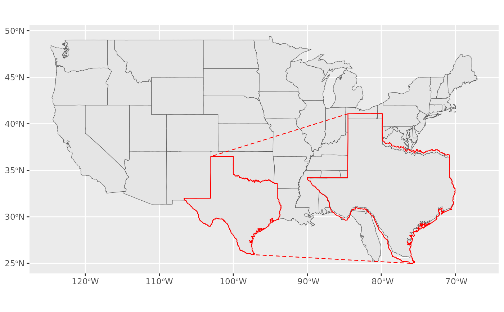

Create a grob from a subset of sf data
Arguments
- where
Logical condition to be evaluated in
sf.- sf
An object of class sf.
- crs
Optional coordinate reference system.
Value
A grid::grob() which you can pass to from.
Examples
library(ggplot2)
if (requireNamespace("sf", quietly = TRUE) &&
requireNamespace("maps", quietly = TRUE)) {
usa <- sf::st_as_sf(maps::map("state", fill=TRUE, plot = FALSE))
texas <- grob_where(ID == "texas", usa, crs = sf::st_crs(4326))
ggplot(usa) + coord_sf(crs = sf::st_crs(4326)) + geom_sf() +
geom_magnify(from = texas, to = c(-90, -70, 25, 35), colour = "red",
aspect = "fixed", expand = 0)
}
#> Coordinate system already present.
#> ℹ Adding new coordinate system, which will replace the existing one.
